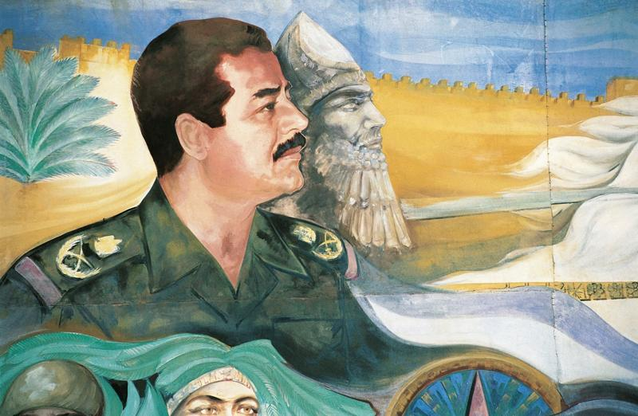
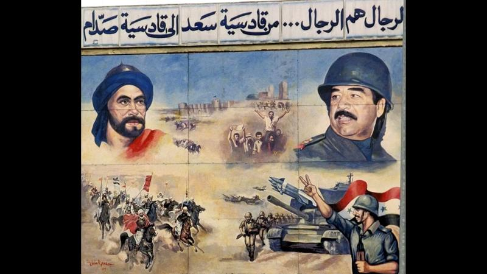
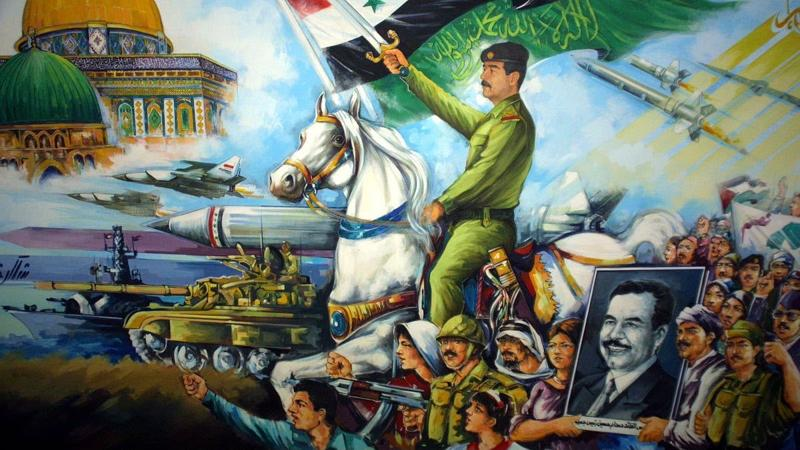
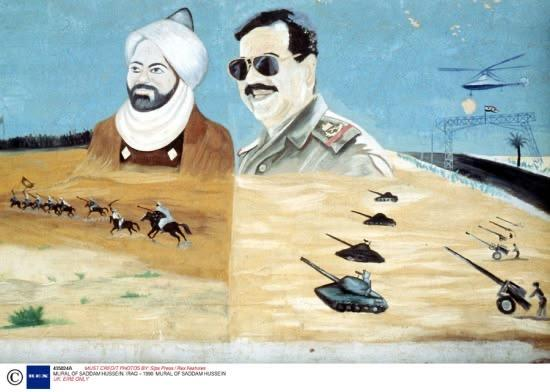
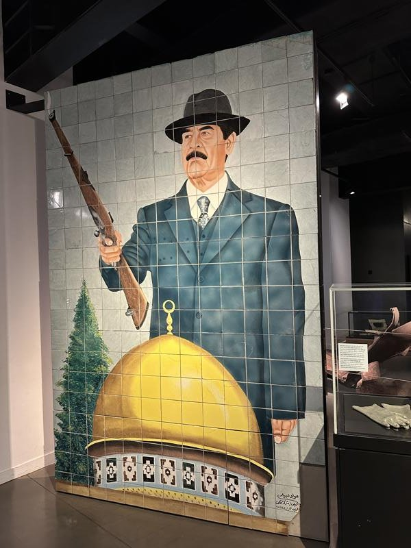
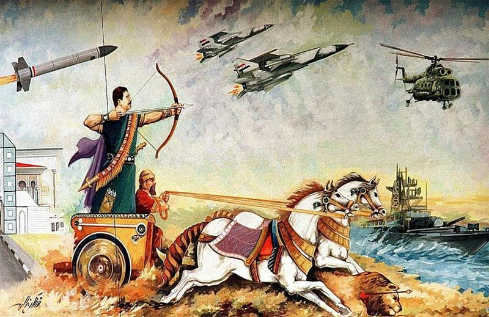

(تنبيه: يحرق هذا المقال أحداثاً من سلسلة ريد ديد ريدمبشن)
أصدقائي،
«لا يمكننا أن نحارب الطبيعة… لا يمكننا أن نحارب التغيير».
أكتب هذه السطور عشية صدور GTA VI، وقد عدتُ مؤخراً لأنغمس من جديد في سلسلة ريد ديد ريدمبشن من إنتاج شركة روكستار غيمز. ووجدتُ نفسي مفتوناً أكثر فأكثر بشخصية داتش فان دير ليند، ولا سيما بالطريقة التي تتدهور بها قيادته مع تقدّم القصة. غير أن أكثر ما شدّ انتباهي هو ذلك الشبه الغريب الذي بدأتُ ألحظه بين داتش ورجلٍ أمضيتُ وقتاً طويلاً في القراءة عن شخصيته ومسيرته السياسية: صدام حسين.
أدرك أن مقارنة رئيس العراق الأسبق بخارجٍ على القانون أمريكيٍّ متخيَّل قد تبدو للوهلة الأولى ضرباً من السخف، نظراً إلى الاختلافات الواضحة بين ظروف كلٍّ منهما. ومع ذلك، كلما أمعنتُ النظر في شخصيتيهما، وفي علاقتهما بأقرب الناس إليهما، وقبل كل شيء في ردّ فعل كلٍّ منهما على تدهور أحواله، ازدادت المقارنة إقناعاً في نظري.
ولمن لا يعرف السلسلة، فإن داتش هو الزعيم الكاريزمي لعصابة من الخارجين على القانون تشقّ طريقها في السنوات الأخيرة من عهد التخوم الأمريكية. وهو رجل متعلّم وفصيح، يرى في نفسه شيئاً من الثائر، ويؤمن بأن التوسّع التدريجي لسلطة الحكومة وللرأسمالية الصناعية يمثّل تهديداً وجودياً للحريات التي تمتّع بها هو ورفاقه طوال عقود. وعلى امتداد السلسلة، يؤكّد داتش لأتباعه مراراً أن لديه خطة ستضمن لهم حريتهم في نهاية المطاف، شريطة أن يبقوا أوفياء له وأن يثقوا به.
وأرى أن أوجه الشبه بين داتش وصدام تتجاوز بكثير ما يجمعهما من كاريزما ونزعات سلطوية وقدرة لافتة على إلقاء خطاب مقنع. فما يجعل المقارنة مثيرة للاهتمام حقاً هو الطريقة التي بات بها كلٌّ منهما يرى، شيئاً فشيئاً، أن سلطته الشخصية لا تنفصل عن بقاء الناس الذين ادّعى تمثيلهم.
العائلة والقوم
من السمات المميِّزة لقيادة داتش إصرارُه على أن عصابة فان دير ليند تمثّل شيئاً أعظم بكثير من مجرد مجموعة من المجرمين. فبعد أن أمضى عقوداً في جمع أناسٍ إما نبذهم المجتمع أو اصطدموا بالقانون، نجح داتش في تأسيس جماعة يعدّ أفرادها بعضهم بعضاً عائلةً بحق.
بل إنه زوّدهم بفلسفة سياسية منحت نشاطاتهم الإجرامية، على ما فيها من تناقضات، مبرّراً أخلاقياً ظاهراً.
فبحسب داتش، لم يكن الدافع وراء العصابة الجشعَ أو الإثراء الشخصي، بل الرغبة في الفرار من مؤسسات المجتمع الأمريكي التي تزداد قمعاً. ومن ثمّ صُوِّرت عمليات السطو على أنها وسيلة لا بد منها للحفاظ على استقلالهم، في حين فُسِّرت مواجهاتهم المتزايدة عنفاً مع السلطات على أنها نتيجة حتمية لرفضهم التخلي عن حريتهم.
ولا أعتقد بالضرورة أن داتش كان كاذباً تماماً في هذه القناعات. بل إن روايات آرثر مورغان وهوزيا ماثيوز توحي بأن داتش كان في ما مضى رجلاً أكثر التزاماً بالمبادئ بكثير. لكن مع تدهور أحوال العصابة، بات من الصعب أكثر فأكثر التمييز بين فهمه لتلك المبادئ ورغبته الشخصية في البقاء على رأس القيادة.
وهنا بدأتُ ألحظ أوجه الشبه مع صدام.
فقد بُنيت الهوية السياسية لصدام إلى حدٍّ كبير على فكرة أن قيادته ضرورية للحفاظ على سيادة العراق وكرامته ومكانته في العالم العربي. ومن خلال جهاز الدعاية الواسع لحزب البعث، لم يُقدَّم صدام بوصفه رئيساً للعراق فحسب، بل بوصفه تجسيداً لتطلّعات البلاد التاريخية وهويتها الوطنية.

جدارية لصدام من الجانب إلى جوار ملك من ملوك بلاد الرافدين القديمة، وفي الخلفية أسوار مدينة قديمة.
فالحرب العراقية الإيرانية، على سبيل المثال، أُدرجت ضمن سردية تاريخية أوسع من خلال ربطها بمعركة القادسية، النصر العربي على الإمبراطورية الساسانية في القرن السابع الميلادي. وعلى المنوال نفسه، أُطلق على المواجهة مع التحالف الذي قادته الولايات المتحدة إثر غزو العراق للكويت اسم «أم المعارك»، وهو لقب ظلّ حاضراً بقوة في الخطاب العراقي الرسمي رغم النتيجة العسكرية الكارثية. ولعل علاقة صدام بصلاح الدين هي أوضح الأمثلة على ذلك. فكلا الرجلين وُلد في تكريت، وقلّما فوّت صدام فرصة لتذكير العراقيين بذلك، مقدّماً نفسه عبر الجداريات والملصقات والخطاب الرسمي بوصفه الوريث الحديث للرجل الذي استعاد القدس من الصليبيين عام ١١٨٧. وكما وحّد صلاح الدين العالم الإسلامي في وجه محتلٍّ أجنبي، قُدِّم صدام على أنه القائد الذي قُدِّر له أن يفعل الشيء ذاته، فغدا تحرير القدس وعداً متكرراً في عهده، بلغ ذروته بتشكيل ما سُمّي «جيش القدس» عام ٢٠٠١، الذي، ويا للدلالة، لم يقترب من القدس قط. والمفارقة بطبيعة الحال أن صلاح الدين كان كردياً، وهي تفصيلة لم تكن دعاية النظام متحمّسة لإبرازها، لا سيما في ضوء ما فعلته حكومة صدام بأكراد الشمال قبل ذلك ببضع سنوات فقط.

جدارية تربط الحرب العراقية الإيرانية بمعركة القادسية. وتقول اللافتة: «الرجال هم الرجال… من قادسية سعد إلى قادسية صدام». سعد بن أبي وقاص على اليسار، وصدام على اليمين.

جدارية لصدام على حصان أبيض رافعاً سيفه، وخلفه قبة الصخرة والمسجد الأقصى، وفي الأسفل حشود تحمل صورته.
وما يثير اهتمامي في هذا النهج هو مدى ما جعله الاعتراف بالفشل شبه مستحيل. فبعد بناء هوية سياسية تُقدَّم فيها قرارات صدام على أنها تعبير عن المصير التاريخي للعراق، صار الإقرار بخطأ تلك القرارات يقوّض بالضرورة شرعية الرجل الذي اتخذها.
ويواجه داتش مشكلة شبيهة إلى حدٍّ لافت. فمع تدهور وضع العصابة، يَعِد أتباعه مراراً بأن عملية سطو أخيرة ستوفّر لهم المال الذي يحتاجونه للتخلّي عن نشاطاتهم الإجرامية والفرار إلى تاهيتي، حيث سيقضون بقية أعمارهم في رتابةٍ يجنون المانجو من حقول لا نهاية لها. غير أن كل عملية فاشلة لا تولّد سوى الحاجة إلى خطة أخرى أشدّ خطراً. وكلما بدأ آرثر أو جون مارستون يشكّكان في حكمة قراراته، فسّر داتش مخاوفهما على أنها دليل على عدم الولاء لا على خلافٍ مشروع.
وفي الحالتين، تغدو مصداقية القائد الشخصية مرتبطة بنجاح المشروع الجماعي ارتباطاً وثيقاً إلى حدّ أن الاعتراف بالخطأ يهدّد أسس سلطته. ونتيجة لذلك، ازداد تمسّك الرجلين أكثر فأكثر بالحفاظ على مظهر التقدّم، حتى حين كانت قراراتهما تؤدي إلى النتيجة المعاكسة تماماً.
بلاك ووتر والكويت
إن أبرز أوجه الشبه بين القصتين يتعلق بالقرارات الكارثية التي غيّرت مسار كلٍّ منهما تغييراً جذرياً.
فبالنسبة إلى داتش، كان ذلك القرار محاولة السطو على العبّارة في بلاكووتر، وهي عملية تجري قبيل أحداث ريد ديد ريدمبشن ٢. ومع أن اللاعب لا يشهد عملية السطو فعلياً، فإن تبعاتها تهيمن على جزء كبير من السرد. فبعد أن أقنعه مايكا بيل بالسعي وراء ما زُعم أنه فرصة مربحة على نحو استثنائي، مضى داتش في العملية رغم أن هوزيا وآرثر كانا يُعِدّان بالفعل خطة بديلة.
وانتهت عملية السطو بكارثة، إذ قُتل عدد من أفراد العصابة، وأطلق داتش نفسه النار على امرأة بريئة، واضطر الناجون إلى ترك أموالهم والفرار إلى الجبال. والأهم من ذلك أن العصابة لم تتعافَ قط تعافياً حقيقياً. فطوال ما تبقّى من اللعبة، حاول داتش مراراً تعويض الخسائر التي تكبّدها في بلاكووتر، غير أن كل عملية لاحقة عرّضت العصابة لمزيد من الخطر، وأخذت تنخر ولاء من تبقّى من أفرادها شيئاً فشيئاً.
ولا يسعني إلا أن أقارن ذلك بقرار صدام غزو الكويت في آب ١٩٩٠.
فبعد ثماني سنوات من الحرب مع إيران، وجد العراق نفسه أمام صعوبات اقتصادية جسيمة، منها ديون هائلة لدول الخليج المجاورة، وتراجع عائدات النفط، والعبء المالي الضخم لإعادة إعمار البلاد. وكانت الكويت على وجه الخصوص قد أصبحت مصدر إحباط متزايد لصدام، الذي اتهم حكومتها بتجاوز حصص الإنتاج النفطي المتفق عليها، وباستخراج النفط العراقي عبر ما قيل إنه حفر مائل.
ورغم أن هذه الخلافات كانت جدية بلا شك، فإن قرار صدام حلّها عبر الاحتلال العسكري للكويت يبقى من أفدح الأخطاء السياسية عاقبةً في تاريخ العراق الحديث.

جدارية تعود إلى عام ١٩٩٠ لصدام إلى جوار قائد مسلم يُرجَّح أنه صلاح الدين، وعلى أحد الجانبين فرسان يندفعون وعلى الآخر دبابات ومدفعية عراقية.
وكما في قرار داتش المضيّ في السطو على عبّارة بلاكووتر، يبدو أن صدام رأى في عملية بالغة الطموح والخطورة وسيلةً للإفلات من وضع مالي وسياسي آخذ في التدهور. ولا بد أن الرجلين قد استهانا كذلك بحجم الردّ الذي ستستثيره أفعالهما.
غير أن تبعات الكويت امتدّت إلى ما هو أبعد بكثير من الهزيمة العسكرية التي مُني بها العراق عام ١٩٩١. وأرى أن السنوات الثلاث عشرة التالية من حكم صدام قد تحدّدت إلى حدٍّ بعيد بالتبعات السياسية والاقتصادية والدبلوماسية لذلك القرار الواحد. فالانتفاضات التي أعقبت الحرب، وقمعها الوحشي، وفرض العقوبات الدولية، ونظام التفتيش عن الأسلحة، وتزايد عزلة العراق، كلها أسهمت في وضعٍ لم يتمكّن صدام قط من إخراج البلاد منه.
وعلى نحو مماثل، يقضي داتش ما تبقّى من ريد ديد ريدمبشن ٢ محاولاً استعادة المكانة التي تمتّعت بها عصابته قبل بلاكووتر، رغم الحقيقة التي تزداد وضوحاً، وهي أن الظروف التي جعلت نمط حياتهم السابق ممكناً قد تغيّرت تغيّراً جذرياً.
ففي الحالتين، أقدم قائدان، في مواجهة ظروف متدهورة، على عمليات بالغة الخطورة أملاً في قلب حظوظهما، ليجدا نفسيهما في النهاية أسيرَي العواقب. وبدلاً من إعادة النظر في الافتراضات التي قامت عليها قراراتهما الأولى، واصل كلاهما السعي وراء استراتيجيات أكثر طموحاً، ظنّاً منهما أن نجاحاً أخيراً واحداً سيعوّض بطريقة ما عن كل ما سبقه.
رجال «نعم»
ومن الجوانب المثيرة للاهتمام أيضاً في هذه المقارنة الأشخاصُ الذين أحاطوا بالقائدين، ومدى تأثيرهم في القرارات التي أفضت في النهاية إلى سقوطهما.
ففي عصابة فان دير ليند، يحتلّ هوزيا ماثيوز موقعاً فريداً إلى حدٍّ ما. فهو، بحكم معرفته بداتش منذ أكثر من عشرين عاماً، ليس مجرد عضو بارز في الجماعة، بل أحد مؤسسيها الأوائل، ومن القلّة القليلة القادرين على الاعتراض على أحكام داتش علناً. وعلى خلاف داتش، الذي كثيراً ما تعتمد خططه المعقّدة على العنف والمواجهة، يميل هوزيا عموماً إلى التفاوض وإلى العمليات المحسوبة بعناية التي تقلّل المخاطر غير الضرورية.
ولذلك فإن مقتله أثناء السطو على مصرف سان دوني يمثّل أكثر بكثير من خسارة شريك متمرّس؛ إذ إنه يُغيّب واحداً من آخر من تبقّى من القادرين على كبح سلوك داتش المتزايد تهوّراً.
وأجد ديناميكية مماثلة في علاقة صدام بعدنان خير الله، ابن خاله وشقيق زوجته ورفيق طفولته، الذي شغل منصب وزير الدفاع العراقي طوال الحرب العراقية الإيرانية. فقد حظي عدنان باحترام كبير داخل المؤسسة العسكرية العراقية، وبفضل علاقته الشخصية القديمة بصدام، قيل إنه مُنح هامشاً من حرية الاعتراض لم يكن ليتاح إلا لقلّة من المسؤولين.
غير أن العلاقة بين الرجلين يبدو أنها ساءت في أواخر الثمانينيات، وسط توترات داخل عائلة صدام وتنامي نفوذ صهره حسين كامل.
وفي أيار ١٩٨٩، لقي عدنان حتفه حين تحطّمت مروحيته خلال عاصفة رملية. ورغم أن الرواية الرسمية عزت الحادث إلى سوء الأحوال الجوية، فإن الشكوك المحيطة بوفاته ظلّت قائمة لعقود. لم أعثر قط على دليل قاطع على أن لصدام يداً في ذلك، لكن، بربّكم.
وبصرف النظر عن ملابسات وفاته، فإن غياب عدنان عن القيادة العراقية خلال الأشهر التي سبقت غزو الكويت يطرح سؤالاً مثيراً للاهتمام.
هل كان صدام سيتخذ القرار ذاته لو بقي عدنان وزيراً للدفاع؟
لا أقول إن عدنان كان سيحول بالضرورة دون الغزو. لكنني، بالنظر إلى طبيعة علاقتهما، أتساءل فعلاً إن كان في موقع أفضل من غيره للاعتراض على الافتراضات التي قام عليها قرار استثنائي كهذا.
والسؤال ذاته يمكن طرحه بشأن هوزيا، الذي ربما كان بقاؤه سيخفّف من حدّة بعض القرارات التي دمّرت العصابة في النهاية.
غير أن ما يجعل هذه المقارنة أكثر إثارة للاهتمام هو ما حدث لداتش بعد مقتل هوزيا.
فمع بدء آرثر وجون في التشكيك في حكمه، راح داتش يمنح ثقة متزايدة لمايكا بيل، وهو وافد جديد نسبياً إلى العصابة، بدت موهبته الأساسية أنه يقول لداتش بالضبط ما يريد سماعه.
وأقنع مايكا داتش تدريجياً بأن أقدم رفاقه وأكثرهم ولاءً لم يعودوا أهلاً للثقة، في حين ظلّ هو نفسه مخلصاً للقضية إخلاصاً تاماً. والمفارقة العجيبة بطبيعة الحال أن مايكا تبيّن في النهاية أنه مخبر، ساعد في تدمير الجماعة ذاتها التي زعم أنه يقدّم بقاءها على كل شيء.
ورغم اختلاف الظروف اختلافاً كبيراً، أجد أن جوانب معيّنة من علاقة مايكا بداتش تذكّرني بصعود حسين كامل داخل الدائرة المقرّبة من صدام.
فبعد زواجه من رغد ابنة صدام عام ١٩٨٣، راكم حسين كامل بسرعة نفوذاً كبيراً داخل المؤسسة العسكرية والأمنية العراقية، حتى امتدّت مسؤولياته في النهاية إلى الحرس الجمهوري وبرامج التصنيع العسكري في البلاد. وارتبط صعوده ارتباطاً وثيقاً بعلاقته الشخصية بصدام، وقيل إن نفوذه المتزايد أثار قدراً كبيراً من الاستياء لدى كبار المسؤولين الآخرين.
ومع ذلك، انشقّ حسين كامل في آب ١٩٩٥ ولجأ إلى الأردن، ودعا علناً إلى إسقاط الحكومة ذاتها التي منحته تلك الامتيازات الاستثنائية. ثم عاد إلى العراق في شباط ١٩٩٦ بعد تلقّيه تطمينات بالعفو عنه، فقُتل هو وأخوه في غضون أيام.
ورغم أن حسين كامل ومايكا شخصيتان مختلفتان جوهرياً، فمن الطريف أن كليهما خان في النهاية القائد الذي أمضى سنوات في كسب ثقته، ليلقى حتفه في ظروف ارتبطت بذلك الرجل نفسه.
والأهم من ذلك أن العلاقتين كلتيهما تكشفان خطورة الخلط بين الولاء والطاعة.
والمفارقة في الحالتين أن أكثر الناس استعداداً لمجاراة قناعات القائد تبيّن في النهاية أنهم قادرون على خيانته، في حين كان المعترضون على قراراته في الغالب من أصدق أتباعه ولاءً.
ويورد الشيخ محمد بن راشد آل مكتوم ملاحظة مماثلة عن صدام في مذكراته، إذ يشير إلى أنه كان قد اعتاد سماع ما يريد سماعه.
وحين نضع ذلك إلى جانب اعتماد داتش المتزايد على مايكا، يصعب تجاهل الشبه. فكلا الرجلين أحاط نفسه بأشخاص قادرين على إدراك مواطن الضعف في قراراته. غير أن البيئة التي صنعها كلٌّ منهما كانت تكافئ من يُخفون مواطن الضعف تلك، لا من يحاولون معالجتها.
لن أرحل، اللعنة!!!
ولعل الجزء الأحبّ إليّ في هذه المقارنة هو عجز داتش عن تصوّر مستقبلٍ تستمر فيه العصابة من دونه.
فطوال ريد ديد ريدمبشن ٢، تسنح لأفراد العصابة فرص مختلفة للإفلات من الظروف المتزايدة خطورةً التي يجدون أنفسهم فيها. لكن داتش يصرّ باستمرار على أن العصابة يجب أن تبقى متماسكة، مؤكداً أن بقاءهم جميعاً مرهون بدوام ولائهم لقيادته.
وكثيراً ما تساءلتُ إن كان داتش يؤمن حقاً بأن أتباعه عاجزون عن النجاة من دونه، أم أنه ببساطة لم يكن قادراً على تخيّل حياة لا يحيط به فيها أناس يعتمدون عليه. وشخصياً، أظن أن في كلا التفسيرين شيئاً من الحقيقة.
وتبرز مقارنة لافتة على نحو خاص عند النظر في المساعي الدبلوماسية لإقناع صدام بالتخلي عن السلطة قبيل الغزو الأمريكي للعراق في آذار ٢٠٠٣. فقد كان من بين من حاولوا إقناع صدام بالتنحّي الشيخ محمد بن راشد آل مكتوم، الذي يروي في مذكراته لقاءً استمر أكثر من خمس ساعات حاول خلاله إقناع صدام بأن رحيله قد يجنّب العراق العواقب المدمّرة لحرب أخرى.
بل إن الشيخ محمد عرض على صدام اللجوء إلى دبي، محتجّاً بأن بقاءه في السلطة يعرّض البلاد لخطر جسيم. غير أن صدام رفض، مجيباً بأن ما يعنيه هو إنقاذ العراق لا إنقاذ نفسه.
ويمكنني حقاً أن أتخيّل داتش يجيب بالطريقة ذاتها تماماً.
فمن منظور صدام، ربما بدا التخلي عن السلطة فعلاً بمثابة التخلي عن العراق في أشدّ لحظاته ضعفاً. وبالنظر إلى ما تلا ذلك من انهيار مؤسسات الدولة العراقية وسنوات العنف والتمرّد والفوضى التي أعقبت الغزو، لا يمكن ببساطة رفض مخاوفه بشأن عواقب تغيير النظام بوصفها بلا أساس على الإطلاق.
لكن ثمة تناقضاً واضحاً في القول بأن الرجل الوحيد القادر على حماية الأمة هو القائد ذاته الذي أوصلتها قراراته إلى هذا الوضع الهشّ.
ويسير منطق داتش على نمط شبيه إلى حدٍّ لافت. فمع اقتراب عصابة فان دير ليند من انهيارها المحتوم، يواصل الإصرار على أن بقاءها مرهون ببقائها موحّدة تحت قيادته، رغم تزايد الأدلة على أن قراراته هو تُعجّل بدمارها.
وكلما اقترح أتباعه أن الافتراق قد يمنحهم فرصة أفضل للنجاة، فسّر اقتراحاتهم على أنها تخلٍّ عن العائلة. ويبدو أن فهم الرجلين للقيادة لم يترك إلا هامشاً ضيقاً لاحتمال أن يكون التنحّي في حدّ ذاته فعلَ وفاءٍ تجاه الناس الذين ادّعيا حمايتهم. وفي الحالتين، أسهم رفض القائد مجرد التفكير في رحيله في تدمير الجماعة (أو الأمة) ذاتها التي كان يعدّ بقاءها فوق كل اعتبار.
سيجدون وحشاً آخر
قرب نهاية الجزء الأول من ريد ديد ريدمبشن، يجد داتش نفسه محاصَراً من قِبل جون، بعد أن فقد تقريباً كل ما كان يمنح حياته معنى.
لكنه قبل موته يحذّر جون من أن السلطات، بعد أن تتخلّص منه، ستجد ببساطة وحشاً آخر تطارده، لأن استمرار وجود أعداء كهؤلاء يوفّر المبرّر للمؤسسات المكلّفة بملاحقتهم.
وهذه من أكثر الملاحظات إثارة للاهتمام في السلسلة كلها، لا سيما أن بقية اللعبة تبدو وكأنها تثبت صحتها. فبعد أن أرغمت السلطات الفيدرالية جون على التخلّص ممن تبقّى من أفراد عصابته السابقة، انقلبت في النهاية على جون نفسه، رغم محاولاته التخلّي عن ماضيه الإجرامي وبناء حياة هادئة مع عائلته.
وأجد موازاة مثيرة للاهتمام في تحذيرات صدام من عواقب الاحتلال الأمريكي للعراق.
فبعد اعتقاله في كانون الأول ٢٠٠٣، يُروى أن صدام حذّر محقّقيه الأمريكيين من أن حكم العراق سيكون أصعب بكثير مما توقّعوا. وقد أثبتت الأحداث اللاحقة أن تقديره لم يكن في غير محلّه تماماً.
فمع أن التحالف بقيادة الولايات المتحدة نجح في إسقاط حكومة صدام في غضون أسابيع، فإن إرساء نظام سياسي مستقر تبيّن أنه أعقد بكثير. فقد أسهم حلّ الجيش العراقي، وتطبيق إجراءات اجتثاث البعث، وانهيار مؤسسات الدولة القائمة في خلق فراغ اكتسبت فيه التنظيمات المسلّحة والميليشيات الطائفية نفوذاً كبيراً.
علاوة على ذلك، كشف ظهور تنظيم داعش، الذي ضمّت قيادته رجالاً ارتبطوا سابقاً بالمؤسسة العسكرية والأمنية لصدام، مدى استمرار تبعات الانهيار السياسي في العراق في تشكيل المنطقة بعد زمن طويل من اختفاء صدام نفسه.
ثم، تماماً كما تنبّأ داتش، انتقلت المطاردة ببساطة إلى الوحش التالي. فقد قُتل أبو مصعب الزرقاوي عام ٢٠٠٦، وأبو بكر البغدادي عام ٢٠١٩. وفي كانون الثاني ٢٠٢٠، قتلت غارة أمريكية بطائرة مسيّرة قرب مطار بغداد قاسم سليماني، قائد فيلق القدس الإيراني، ومعه أبو مهدي المهندس، نائب رئيس هيئة الحشد الشعبي العراقية. والمفارقة أن عدداً من هذه الوحوش لم يجد طريقه إلى العراق إلا لأن صدام قد رحل. فرغم كل جرائمه، أمضى صدام ثماني سنوات في حرب مع إيران، والسنوات الخمس عشرة التالية وهو يعدّها أكبر خطر يتهدّده. بل إنه بلغ حدّ إخبار محقّقه في مكتب التحقيقات الفيدرالي بأن رفضه السماح بعودة مفتّشي الأسلحة إلى البلاد كان مردّه الخوف من أن تكتشف إيران مواطن ضعف العراق أكثر من أي خوف من الأمريكيين.
وما إن أُزيح صدام وحُلّ الجيش حتى انهار معه الجدار الذي بناه في وجه طهران، ولم تضيّع إيران وقتاً في ملء الفراغ عبر الميليشيات التي سلّحتها وموّلتها ودرّبتها. ثم أمضى الأمريكيون أنفسهم الذين أطاحوا بصدام العقدين التاليين في مطاردة الوحوش الجديدة التي نشأت في الفراغ الذي خلّفه، وكل واحد منها يبرّر مطاردة الذي يليه، تماماً كما قال داتش.
وأعتقد أن ثمة فرقاً مهماً بين الإقرار بصحة ملاحظة بعينها وتأييد الرجل الذي أبداها.
فتحذيرات صدام من صعوبات حكم العراق لا تُثبت بالضرورة صواب قراراته السياسية، تماماً كما أن انتقاد داتش للسلطات الفيدرالية لا يُعفيه من مسؤولية انهيار عصابته.
ومع ذلك، أظهر الرجلان قدرة لافتة على تحديد مواطن ضعف خصومهما وتناقضاتهم، مع بقائهما غير مستعدَّين للاعتراف بإخفاقات مماثلة في نفسيهما. وكان هذا من التناقضات المميِّزة لشخصيتيهما؛ فقد كانا في الغالب ثاقبَي النظر حين يتفحّصان سلوك الآخرين، لكنهما يقاومان بعناد إخضاع قراراتهما للتمحيص ذاته.
لقد انتهى زمننا
يبرز أهم فرق بين داتش وصدام في الظروف المحيطة بموتهما.
فبحلول نهاية الجزء الأول من ريد ديد ريدمبشن، يكون داتش قد أدرك أخيراً أن العالم الذي ازدهر فيه يوماً قد اندثر. فتوسّع السلطة الفيدرالية، ونموّ الرأسمالية الصناعية، والاختفاء التدريجي للتخوم الأمريكية، جعلت نمط حياته السابق مستحيلاً. وحين يحاصره جون أخيراً، يقرّ داتش بأن زمنهم قد ولّى، ثم يتراجع إلى الخلف ويسقط من فوق جرف بدلاً من أن يسمح بأن يُقبض عليه.
أما صدام، فيبدو أنه لم يتقبّل قط إزاحته عن السلطة. فحين عثرت عليه القوات الأمريكية مختبئاً قرب الدور في كانون الأول ٢٠٠٣، يُروى أنه عرّف بنفسه على أنه رئيس العراق، بعد أشهر من انهيار حكومته، وطوال محاكمته طعن مراراً في سلطة المحكمة، وظلّ يصرّ على أنه لا يزال رئيس العراق الشرعي.
بل إن إعدامه في كانون الأول ٢٠٠٦ عكس التناقضات الاستثنائية لإرثه. فالتسجيل الذي انتشر على نطاق واسع للحظاته الأخيرة، والذي ظهر فيه الحاضرون يتهكّمون عليه ويهتفون باسم مقتدى الصدر، غيّر نظرة شريحة واسعة من المجتمعين العراقي والعربي إليه. فبالنسبة إلى البعض، لم تزد اللقطات إلا من إدانتهم لحكومته. أما بالنسبة إلى كثيرين غيرهم، فقد حوّله ثباته على منصّة الإعدام إلى رمز للتحدي، في وقت كان فيه الاحتلال الأمريكي والانقسامات الطائفية في العراق يزدادان سوءاً. وبهذا المعنى، يمكن القول إن موت صدام عزّز الأسطورة ذاتها التي أمضى سنوات حكمه في صناعتها.
أما داتش، فقد مات وقد تقبّل أخيراً أن العالم الذي أمضى حياته يحاول الحفاظ عليه قد ولّى. فكلا الرجلين فقد السلطة التي كان يمارسها يوماً، لكن نهايتيهما تكشفان فرقاً حقيقياً في طريقة مواجهة كلٍّ منهما لتلك الخسارة. فقد تقبّل داتش في النهاية أن صراعه بات مستحيلاً، في حين ظلّ صدام متمسّكاً بهويته السياسية حتى آخر لحظة في حياته.
لديّ خطة

لوحة من البلاط لصدام يحمل بندقية أمام قبة الصخرة، معروضة في متحف الحرب الإمبراطوري في لندن. تصوير: مات براون، الترخيص هنا
بعد التأمّل في كل ذلك، أجدني أعود إلى السؤال ذاته: ما الذي جعل داتش وصدام آسرَين إلى هذا الحد في نظر من تبعوهما؟ لا أعتقد أن الأمر يمكن تفسيره بالخوف أو الانتهازية أو التلاعب وحدها. فقد أدّت ثلاثتها دوراً، وفي حالة صدام أكثر من غيرها، لكن هذا التفسير يغفل الولاء والإعجاب الحقيقيين اللذين ألهمهما الرجلان لدى من عرفوهما شخصياً. فمودّة آرثر لداتش كانت صادقة بوضوح، حتى بعد خيبة أمله في النهاية، وحظي صدام بإعجاب حقيقي لدى شرائح من المجتمع العراقي لا يمكن تفسير تأييدها بالإكراه وحده.
لقد امتلك الرجلان صفات كان من الممكن، في ظروف مختلفة، أن تفضي إلى نتائج مختلفة تماماً. فقد كانا يتمتّعان بالكاريزما، وبالفطنة السياسية، وبالقدرة على التعبير عن مظالم تلقى صدى لدى أتباعهما. غير أن تلك الصفات ذاتها غدت أكثر فأكثر تدميراً كلما صار الاعتراض على سلطتهما الشخصية وعبادة شخصيتهما أصعب.
وربما لهذا السبب أجد داتش شخصية آسرة إلى هذا الحد، بوصفي عراقياً نشأ وهو يسمع روايات متباينة جداً عن حكم صدام. لطالما اهتممتُ بتناول صدام بعيداً عن الصور المبسّطة التي تطغى عادة على النقاشات حول حكمه. لا لأنني أرى أن مسيرته السياسية بحاجة إلى ردّ اعتبار، بل لأنني أرى في تناقضات شخصيته، وفي الولاء الاستثنائي الذي ألهمه لدى بعض أقرب الناس إليه، ما يستحق الدراسة والتأمّل.
وعلى المنوال ذاته، لا أعتقد أن داتش يمكن فهمه فهماً صحيحاً بالنظر فقط إلى القرارات المشينة التي يتخذها قرب نهاية ريد ديد ريدمبشن ٢. فهو أيضاً الرجل الذي ربّى آرثر وجون، ووفّر مأوى لأناس لم يكن لهم مكان آخر يلجؤون إليه، وألهم مودّة حقيقية لدى من ظلّوا يؤمنون به بعد زمن طويل من بدء تدهور حكمه. وهذا التناقض تحديداً هو ما يجعل سقوطه في النهاية آسراً إلى هذا الحد.
لا أزعم أن روكستار غيمز قد صاغت شخصية داتش فان دير ليند على غرار صدام حسين عن قصد، لكنني أجد من اللافت مدى التشابه الوثيق بين السرديتين حين ننظر إليهما من خلال العلاقات والقناعات السياسية ومواطن انعدام الأمان الشخصي لدى الرجلين اللذين يقفان في قلبهما.
وأكثر أوجه الشبه دلالةً أن كليهما أمضى معظم سنواته الأخيرة يؤكّد لمن حوله أنه يفهم الوضع أفضل من أي أحد آخر، في حين كانت الأدلة على أن قراراته تفضي إلى عواقب كارثية تتراكم باستمرار. فسواء أكان داتش يَعِد بأن عملية سطو أخرى ستتيح للعصابة الفرار أخيراً، أم صدام يصرّ على أن العراق سينتصر في النهاية على خصوم يزدادون قوة، بدا كلاهما مقتنعاً بأن قيادته ضرورية لنصرٍ ظلّ يبتعد أكثر فأكثر عن متناول اليد.

صدام في هيئة ملك من ملوك بلاد الرافدين القديمة، يشدّ قوسه من فوق عربة حربية تدوس أسداً صريعاً، وفوقه صواريخ وطائرات مقاتلة ومروحية، وفي البحر سفينة حربية.
أظن أن السؤال الذي يبقى لديّ هو: هل كان أيٌّ من الرجلين سيرى نفسه في الآخر؟ ومع ذلك، أشكّ في أن الاثنين كانا سيتحمّلان بعضهما طويلاً. فكلاهما رأى في نفسه من لا يمكن الاستغناء عنه، ويصعب عليّ أن أتخيّل أياً منهما يقبل بموقع يتخذ فيه شخص آخر القرارات، ناهيك عن أن يتقبّل بصدر رحب أن يُقال له إن الآخر لديه خطة أفضل.

اضغط على الصورة للعودة للصفحة الرئيسية